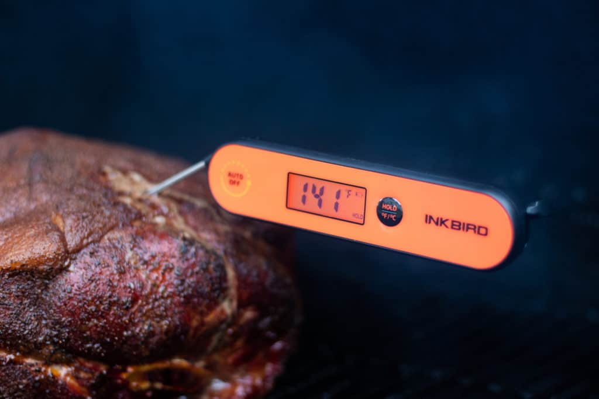
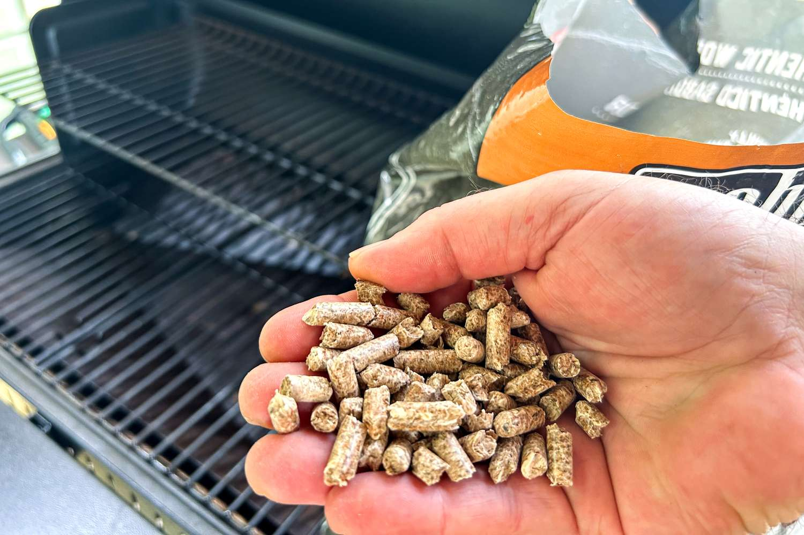

Thermometer

It is very important to have an instant read thermometer when smoking low and slow. Temperature is
one of the ways to tell if your food is done. If you do not use a thermomenter, you may undercook,
or overcook your food.
My recommendations would be IncBird.
Wood Pellets

Wood pellets are fundamental to pellet grilling because they are the clean-burning, flavor-giving,
easy-to-use fuel that powers the grill and delivers authentic wood-fired barbecue taste. The choice
and quality of your pellets will directly impact the flavor, aroma, and success of your barbecue.
You can chose fram various wood pellets on the Traeger Website.